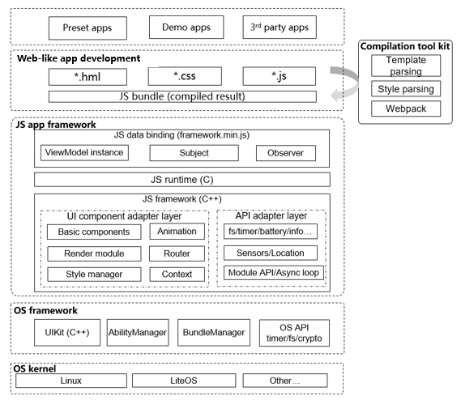

JS Application Framework¶
Introduction¶
The JS application framework allows you to develop web-like applications across platforms. The framework uses Toolkit to pack your .hml, .css, and .js files to a JavaScript bundle, parses the bundle, generates the native UI view component tree, and then renders it for display. You can use the declarative APIs to develop applications. This allows data to drive view changes and avoids a large number of view operations, greatly simplifying application development.
The following figure shows the framework modules.

Directory Structure¶
The source code of the framework is stored in /foundation/ace. The following shows the directory structure.
/foundation/ace
├── frameworks # Framework code
│ └── lite
│ ├── examples # Sample code
│ ├── include # Exposed header files
│ ├── packages # JavaScript implementation
│ ├── src # Source code
│ ├── targets # Configuration file of each target device
│ └── tools # Tool code
├── interfaces # APIs exposed externally
│ └── innerkits # Header files of internal subsystems
│ └── builtin # JavaScript third-party module APIs exposed by the JS application framework
Constraints¶
Language versions:
C++11 or later
JavaScript ES5.1
Framework runtime memory consists of:
Runtime memory for the JavaScript engine: The memory size is adjustable and depends on the complexity of the device application. Generally, 64 KB to 512 KB is recommended.
Native memory for the framework itself: For devices whose memory capacity exceeds 100 KB, it is recommended that a pre-allocated memory pool be used for native memory management. The memory pool is shared with the native UI framework.
The framework provides different specifications for various chip platforms and underlying OS capabilities:
Cortex-M RAM and ROM
JavaScript engine memory pool: greater than 48 KB (recommended)
RAM: memory pool shared with the native UI (recommended). The size must be greater than 80 KB.
ROM: greater than 300 KB (for the JS application framework and related subsystems, such as native UI and JavaScript engine)
Cortex-A RAM and ROM
JavaScript engine memory pool: greater than 128 KB (recommended)
RAM: greater than 512 KB (recommended)
ROM: greater than 2 MB (for the JS application framework and related subsystems, such as native UI and JavaScript engine)
Using targets¶
The implementation of the JS application framework consists of the following two parts:
Native part: The native part is developed in C++ and is the main body of the framework.
JavaScript part: The JavaScript part supports the runtime environment of JavaScript files, and supports the interaction between the JavaScript runtime and native framework through some global functions or objects exposed to the JavaScript engine.
The framework uses feature macros to customize function code to be compiled on different platforms. The feature macros are stored in header files in foundation/ace/frameworks/lite/targets. The directory structure is as follows:
/foundation/ace/frameworks/lite/targets
├── default/
│ └── acelite_config.h
├── linux/ # Linux environment configuration files
│ └── acelite_config.h
├── liteos_a/ # Environment configuration files for LiteOS Cortex-A
│ └── acelite_config.h
├── liteos_m/ # Environment configuration files for LiteOS Cortex-M
│ └── acelite_config.h
├── platform_adapter.cpp
├── platform_adapter.h
└── simulator/ # Simulator environment configuration files
└── win/
└── acelite_config.h*
Note: Currently only the target compilation for LiteOS Cortex-A is open-source, which is built using Ninja (BUILD.g). Other targets such as simulat (CMake+MingW), Linux(Ninja), and LiteOS Cortex-M (IAR) are not completely open and will be gradually released after the adaptation is complete. The following examples describe the role of the targets directory in building different targets.
When compiling for different platform targets, use the acelite_config.h file in the corresponding platform directory. You can configure the header file searching path for compilation to locate the file to use. The following takes ninja and cmake build tools as examples:
ninja:
if (ohos_kernel_type == "liteos_a" || ohos_kernel_type== "liteos_m" || ohos_kernel_type == "liteos_riscv") { // Select different header file searching paths based on the target kernel platform. include_dirs += [ "targets/liteos-a" ] } else if (ohos_kernel_type == "linux") { include_dirs += [ "targets/linux" ] }
cmake:
...... set(ACE_LITE_CONFIG_PATH "${CMAKE_CURRENT_SOURCE_DIR}/targets/simulator/win") # Set the simulator search path to targets/simulator/win. set(JSFWK_INCLUDE_PATH "${CMAKE_CURRENT_SOURCE_DIR}/include") set(JSFWK_SOURCE_PATH "${CMAKE_CURRENT_SOURCE_DIR}/src/core") set(UIKIT_PATH "${CMAKE_CURRENT_SOURCE_DIR}/../ui") set(THIRTY_PATH "${CMAKE_CURRENT_SOURCE_DIR}/../../../third_party") set(JSFWK_SIMULATOR_PATH "${CMAKE_CURRENT_SOURCE_DIR}/../tools/simulator") set(JS_API_PATH "${CMAKE_CURRENT_SOURCE_DIR}/../../api/emui_band/MoltenCore/application/framework/ace/api") set(JSFWK_SIMULATOR_PATH "${CMAKE_CURRENT_SOURCE_DIR}/../tools/simulator") set(AAFWK_PATH "${CMAKE_CURRENT_SOURCE_DIR}/../../../aafwk") # header files include_directories( ${ACE_LITE_CONFIG_PATH} ${JSFWK_INCLUDE_PATH}/async ${JSFWK_INCLUDE_PATH}/base ${JSFWK_INCLUDE_PATH}/context ${JSFWK_INCLUDE_PATH}/jsi ${JSFWK_SOURCE_PATH} ......
The acelite_config.h file is used to enable or disable the feature macros of different platforms. It can also be used to define constants for shielding platform differences. For example, platform file systems are different, and the names of some fixed directories might be different. These constants can be defined as follows:
liteos-a/acelite_config.h
#define JS_FRAMEWORK_PATH "//system/ace/bin/"simulator/win/acelite_config.h
#define JS_FRAMEWORK_PATH "..\\..\\..\\jsfwk\\packages\\runtime-core\\build"
Using Runtime-core¶
Runtime-core is a JavaScript-based simple data hijacking framework provided by the JS application framework to implement unidirectional data binding. The directory structure is as follows:
/foundation/ace/frameworks/lite/packages
└── runtime-core
├── .babelrc # Babel configuration file
├── .editorconfig # IDE configuration file
├── .eslintignore # Configuration file of the ESLint tool. You can set a directory or files that will not be scanned by the ESLint tool.
├── .eslintrc.js # ESLint configuration file for scanning rules
├── .gitignore
├── package.json # NPM file
├── package-lock.json # NPM dependency lock file
├── .prettierrc # Configuration file for code formatting rules
├── scripts # Directory for compilation scripts
│ ├── build.js # Compilation script
│ └── configs.js # Rollup configuration file
├── .size-snapshot.json
└── src # Source code
├── core # ViewModel core implementation code
│ └── index.js
├── index.js
├── observer # Data hijacking implementation code
│ ├── index.js
│ ├── observer.js
│ ├── subject.js
│ └── utils.js
├── profiler # profiler directory
│ └── index.js
└── __test__ # Test cases
└── index.test.js
The following NPM commands are supported:
npm run build
The JavaScript engine integrated in the JS application framework supports ES5.1 syntax only. However, the runtime-core is implemented using JavaScript ES6. Therefore, you should use Babel for syntax degradation and use Rollup to package the code. Run the npm run build command, and the packaged files are output to the build directory.
build/ ├── framework-dev.js // Framework code used in the development environment (uncompressed and obfuscated) ├── framework-dev.min.js // Framework code used in the development environment (compressed and obfuscated) ├── framework-dev.js // Framework code used in the production environment (uncompressed and obfuscated) ├── framework-dev.min.js // Framework code used in the production environment (compressed and obfuscated)
npm run test
Runtime-core uses Jest for unit testing. Run the npm run test command to start the unit test.